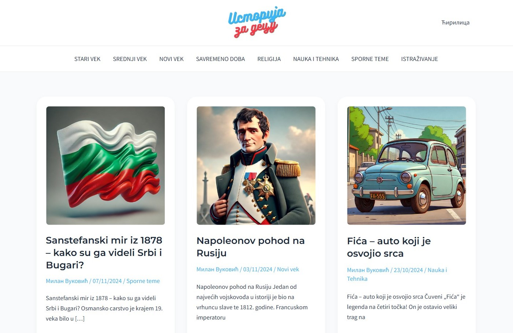

Preamble
I've always had a passion for making and modifying things. Back in the
MySpace era, I fully customized my profile by modding the CSS—even
though I didn’t know what CSS was back then! I also modded video games
from as early as I can remember.
As a kid, I converted my old fixed-gear bicycle to an 18-speed.
Converted an electric guitar to a piezo-acoustic so I could use nylon
strings on it.
At 14, I even swapped a more powerful engine into my car
Before I began working in tech, I thought I would become a CNC
Programmer. I started attending an apprenticeship, where I learned the
basics of G-code and manufactured my very first pieces.
MyProjects
WebGrid.Dev Projects Gallery Slider

Custom Image Gallery Block with Sliding Zoom-In Effect
This block is perfect for showcasing image collections such as
photography portfolios, product images, travel photos, or any visual
content that benefits from added depth and movement.
You can view the repo
here.
PHPprojectCrud - a CRUD app using PHP

PHPprojectCrud - everything was coded from scratch manually,
although I did have to reference quite a lot of online resources
You can view the repo
here.
Istorija Za Decu - History for children ages 10 to 14 years old.

istorijazadecu.rs - History for children ages 10 to 14 years old.
You can view the website
here.
BeLikeNow - Piercing & Tattoo Studio.

istorijazadecu.rs - everything was coded from scratch manually,
although I did have to reference quite a lot of online resources
You can view the website here.
Allow me to present a few of my early projects:
StopwatchJS
PHPprojectCRUD
expandingPhotosJS